| 縦断データの分析 |
| 縦断データの分析 |
加工されていない変数に非線形モデルを当てはめるより、変換した変数に線形モデルを当てはめた方が、分析はしばしば明確なものになる。
メモ
データをやたら変換してからモデルに当てはめるのではなく、モデルによってデータの性質を表現するべきであるとする久保 (2012) とは対照的な意見だ。
メモ
 |
(4.5) |
と
 |
(4.6) | ||
 |
(4.7) |
を合成すると、
![\begin{equation} Y_{ij} = [\gamma _{00} + \gamma _{10} \textit{TIME}_{ij} + \gamma _{01} \textit{COA}_ i + \gamma _{11} (\textit{COA}_ i \times \textit{TIME}_{ij})] + [\zeta _{0i} + \zeta _{1i} \textit{TIME}_{ij} + e_{ij}] \end{equation}](images/img-0016.png) |
(4.8) |
となる。
この合成残差 ![$[\zeta _{0i} + \zeta _{1i} \textit{TIME}_{ij} + e_{ij}]$](images/img-0017.png) を見ると、時不偏な残差
を見ると、時不偏な残差  と
と  があることで、測定機会ごとの残差は個人内で自己相関していて等分散が仮定できないということが分かる。
があることで、測定機会ごとの残差は個人内で自己相関していて等分散が仮定できないということが分かる。
OLS よりも残差に複雑な仮定をおくことが可能だが、真の誤差共分散行列の中身について知る必要がある。 そこで、
OLS によってあてはめたモデルから残差を算出し、誤差共分散行列を推定
推定された誤差共分散行列を真のものと見なしてモデルを再当てはめ（固定効果とSEを算出）
という2段階のアプローチを繰り返すことを考える（反復一般化最小二乗法 IGLS）。
標本データを観測する尤度を最大化する母数を求める。
分散成分の FML 推定値は、固定効果の FML 推定値を含んだ形で与えられる。
 固定効果の値を既知として扱うことになる。
固定効果の値を既知として扱うことになる。
分散成分の推定において、本来考えるべきであった固定効果の分の自由度を無視してしまう。
分散成分の過小推定（ で割るべきところを
で割るべきところを  で割っているようなもの。）
で割っているようなもの。）
モデル全体の当てはまりを検証できるので、適合度検定は固定効果も変量効果も両方対象にすることができる。
標本データではなく、標本残差を観測する尤度を最大化する分散共分散を求める。 つまり、
固定効果の推定 残差の算出 この残差は、どのような分散成分のもとで最も得られやすいのか？
を考えるということ。
ただし、RML が FML よりも一方的に優れていることは証明されていない。
残差部分の当てはまりのみを議論しているので、適合度検定は変量効果しか対象にすることはできない。
単に結果変数の変動を記述するもの。 どのレベルにも予測変数は含まれない。
| 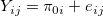 | (4.7) | ||
| 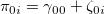 | (4.8) |
引き続き分析を行う価値があるだけの十分な変動がそのレベルにおいて見られているか確認する。
個人間変動が全体に占める割合を評価する
合成無条件平均モデルの残差の自己相関の大きさを要約する
| 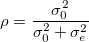 | (4.9) |
無条件平均モデルでは、残差の自己相関係数は級内相関係数に等しい。
| 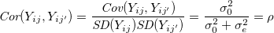 |
レベル1モデルに予測変数 TIME を導入する。
| 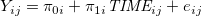 | |||
| (4.10) | |||
| 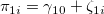 |
すると、合成された残差は 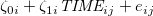 であるから、異分散性と自己相関が導き出される1。
2つの方法がある。
各個人の各時点での結果変数の予測値を計算し、観測値と予測値の相関を2乗する
予測変数を追加することで 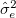 がどれくらい減少したか、追加前の値との比を取る（残差分散減少率）
主たる予測変数と、統制したい予測変数を区別すること
予測変数を投入したあとの残差分散を偏分散 partial variance や 条件付き分散 conditional variance と呼ぶ
時不変の変数を中心化する場合、標本平均を引くことが一般的だが、現実的に意味のある定数で中心化することが重要。
ダミー変数であっても、平均（平均的な対象者）に意味があれば中心化することもある。
レベル2の予測変数を全て中心化しておけば（レベル1の予測変数が TIME のみであれば）切片は無条件成長モデルに一致する。 レベル2の予測変数は、2値変数でも全て中心化してしまうことが多い。
メモ
標本平均や標本比率などを用いて中心化する場合、その値の信頼性や標本変動によって切片の有意味性は変化すると思う。
メモ
| 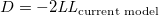 | (4.11) |
双方のモデルが同じデータを用いて推定されており2
片方のモデルがもう片方にネスとしている
場合、乖離度統計量を比較することができる。
ネストしていないモデルを比較する場合、AIC や BIC を用いる。
帰無仮説を  のように一般線形仮説の形で表し、パラメータの重み付き線形結合の2乗をその分散の推定値と比較する。 なお、分散成分の複合帰無仮説の検定に利用することは推奨されない。
のように一般線形仮説の形で表し、パラメータの重み付き線形結合の2乗をその分散の推定値と比較する。 なお、分散成分の複合帰無仮説の検定に利用することは推奨されない。
メモ 一般線形仮説のワルド検定については要確認。 メモ
得られた結果の妥当性は、モデルを当てはめる際の仮定をどれくらい許容できるかに依存する。
関数形: 結果変数と予測変数の散布図を各レベルで描いてみる
正規性:
素残差 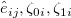 について、各値とそれに対応する正規スコアとの散布図（正規確率プロット）を描画する（ 線形性から逸脱していないか？）
標準化残差をプロットする（正規分布に従っているなら、約95%が中心 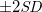 以内に収まるはず）
等分散性: 予測変数と素残差のプロット
以下の2つの方法がある。
OLS 推定値と母平均の推定値の重み付き平均
個人の予測変数から平均的な軌跡を得て、そこにレベル2の残差を加える
| 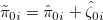 | (4.21) | ||
| 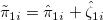 |
属性を共有する他者からの情報を利用することで（borrowing strength）、個人の推定値が正確なものになる。
経験ベイズ推定値では不偏性は犠牲になるが、OLS よりも精度は良い。
ただし、推定値の質はモデル適合の質に大きく依存する。
Footnotes
| 縦断データの分析 |